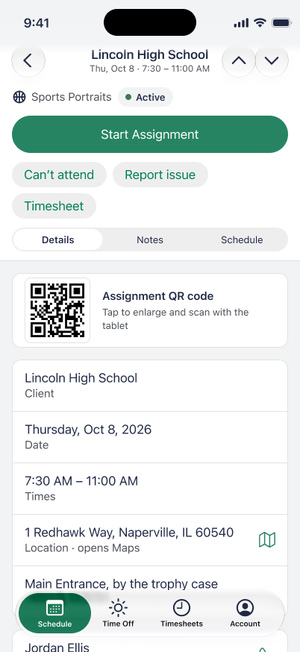
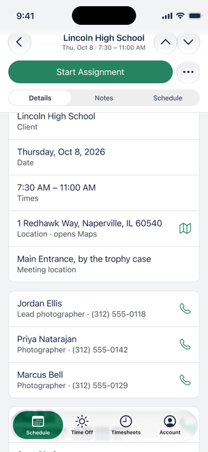
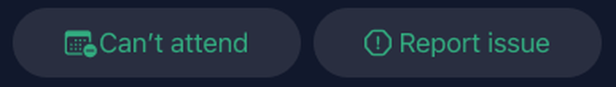
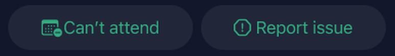
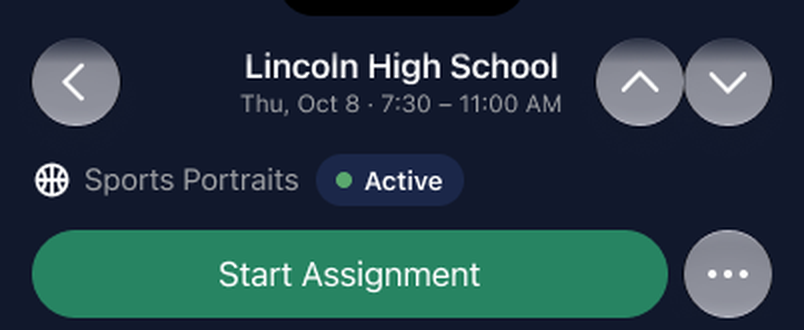
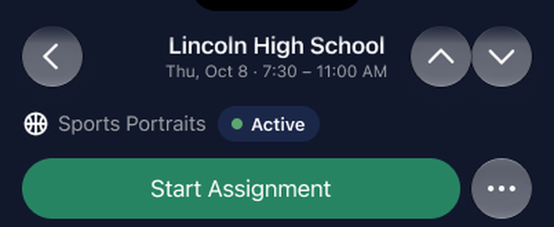

The Photographer's Journey
VIP Photographer App · Work in progress · Design and prototype complete
Alan Porterfield
Photographers had a desktop website for work that happens in the field. I designed a phone app around their day: the schedule, time and travel, reporting a problem, and delivering photos. This page covers the process, what the evaluation found, and four design decisions, with links to the PRD, the full evaluation and the full decision log.
Contents
Process
- Research. Two months shadowing VIP photographers on assignment: sitting in on shoots, riding along between locations, and interviewing them directly about what problems an app could solve.
- Requirements. An iterating PRD (opens in a new window) where every UX call was logged with a date and rationale.
- Design. Click-through Figma flows in Light and Dark. The UI is built on a copy of the iOS 27 Builder kit with VIP's brand colours and fonts, which kept the screens inside Apple's guidelines.
- Demo. A working HTML prototype of the same flows.
- Evaluation. A heuristic evaluation of the demo and the Figma screens, then design changes with before and after screenshots, and a check that the demo and Figma still match.
The problem
- No single source of truth. No single tool for schedule details, pay tracking, and flagging issues.
- Payroll friction. No reliable record of drive time and tolls.
- Slow resolution. A late arrival or equipment failure has no mobile-first path.
- Slow, error-prone photo upload. Manual photo transfers are time-consuming, delaying delivery and creating rework.
Key findings
The evaluation found 21 problems in the demo and Figma screens: 4 major, 13 minor and 4 cosmetic. Read from the evaluation, the ones to fix first were:
- Accessibility gaps. Seven switches with no accessible name, and type fixed in pixels so Dynamic Type could not be tested.
- No way back in. No "Forgot password?" and no alternate route if the text message doesn't arrive.
- Silent loss of typed text. Tapping outside a sheet closes it and discards what was typed.
- Small touch targets. Chips at 36 pt, segmented controls at 28 pt and several buttons at 34–43 pt, against the 44 pt minimum.
- Contrast below AA. Accent text on tinted buttons and green text in Dark mode, fixable in the colour tokens.
See the fix-first list (opens in a new window) · All 21 findings with severity and fixes (opens in a new window)
Four decisions
Decision 1Put the secondary actions behind a menu, next to the primary button
Header 350 pt → 256 pt; secondary actions move into a More menu
The pinned Assignment header was 350 pt tall, 40% of the screen, and would only grow with larger text. Can't attend, Report issue and Timesheet moved into a More menu beside the green primary button, which brought the header to 256 pt. When there is no primary button, the actions show as buttons instead.
Trade-off: an urgent action now takes two taps, and the actions are shown differently from day to day. I chose coherence over consistency, because these actions are rarely used on the day of the assignment and should not take permanent space from the one action used every time. This is based on anecdotal feedback from stakeholders.


Decision 2Collapse the header on scroll
The type and status row scrolls away; the primary row and tabs stay pinned
The type and status row is not needed once the person scrolls, so it scrolls away. The primary row and the Details, Notes and Schedule tabs stay pinned (218 pt in Figma).
Trade-off: about a quarter of the screen stays pinned. I considered unpinning the tabs or the primary button; the tabs are the cheapest element to keep and the primary action must stay reachable.

Decision 3Fix contrast where it starts
Fill 24% → 16% (about 4.7:1 on a card); white label on green (4.60:1)
The tinted bordered buttons left green label text at about 4.2:1 on a card in Dark, below AA. Lowering the fill from 24% to 16% brings it to about 4.7:1. The primary button label is white on the green (4.60:1) in Dark as well as Light.
Trade-off: these are overrides on the design screens. The lasting fix is in the library tokens, which I logged as library change requests.


Bordered buttons (opens in a new window) · White label on green (opens in a new window)
Decision 4Plain nav buttons, with the accent colour as the cue
Back, previous and next lose their fill; More keeps its circle
The back, previous and next buttons had a glass fill that was hard to make accessible and that native iOS would not render the same way. They are now plain glyphs in the accent colour, which the app uses for everything tappable. The More button keeps its circle.
Trade-off: plain glyphs look less like buttons, so they dim at the first and last assignment to show they are controls.


What's next
- Fix the four major findings, then test Dynamic Type and VoiceOver, neither of which has been tested yet.
- Move the colour and button fixes into the library so the overrides can be removed.
- Run a formal user validation study with target users (VIP photographers) to verify the desirability and usability of the product.
- Field-test the QR photo upload against real venue conditions before making it the default.
Nine design changes are documented in Design decisions (opens in a new window); this page shows four. The evaluation is dated November 5, 2026.